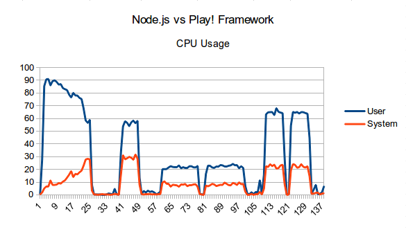
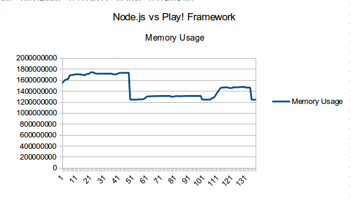

Node.js vs Java Play! Framework
After having somewhat of a heated Facebook conversation with a friend about the Ups and Downs of various web frameworks, I was inspired to benchmark a simple “Hello World” to compare the speed and resource usage of Node.js and the Play! Framework (using Java).
Being mostly Perl guys ourselves, my go-to tool for web wizardry is generally the awesome Catalyst MVC framework, can’t say the same about my friend.
All the tests below were completed on my Laptop – Intel Core i5 M480 CPU @ 2.67GHz (2 cores, 4 threads) with 8 GB RAM running Ubuntu 13.10.
I’m comparing node.js v0.10.15, Play 2.2.1 built with Scala 2.10.2 (running Java 1.7.0_51) and using ApacheBench 2.3 in the following benchmarks, monitoring system resource usage using Dstat 0.7.2.
I know it’s not a very exhaustive set of benchmark tests, but the ApacheBench command I ran made 100,000 requests with a concurrency of 1,000.
~$ ab -r -n 100000 -c 1000 <url>
The Play! Framework
After creating the basic application template made by running
~$ play new hello
I simply changed the app/controllers/Application.java to contain the following:
package controllers;
import play.*;
import play.mvc.*;
import views.html.*;
public class Application extends Controller {
public static Result index() {
return ok("Hello World");
}
}
And the results?
Concurrency Level: 1000
Time taken for tests: 8.764 seconds
Complete requests: 100000
Failed requests: 0
Write errors: 0
Total transferred: 9100000 bytes
HTML transferred: 1100000 bytes
Requests per second: 11410.73 [#/sec] (mean)
Time per request: 87.637 [ms] (mean)
Time per request: 0.088 [ms] (mean, across all concurrent requests)
Transfer rate: 1014.04 [Kbytes/sec] received
Connection Times (ms)
min mean[+/-sd] median max
Connect: 0 72 314.7 0 7016
Processing: 0 9 23.5 5 883
Waiting: 0 9 23.3 5 882
Total: 0 81 322.1 6 7039
Percentage of the requests served within a certain time (ms)
50% 6
66% 8
75% 10
80% 11
90% 23
95% 1004
98% 1011
99% 1025
100% 7039 (longest request)
Not too shabby if you ask me.
11,410.73 requests per second, and 8.764 seconds to complete the test.
So obviously node.js can do better, right?
This one was much simpler to get up and runnning. My hello.js is as follows:
var sys = require('sys'),
http = require('http');
http.createServer(function(req, res) {
res.writeHead(200, {'Content-Type': 'text/html'});
res.write('Hello World');
res.end();
}).listen(8080);
Show me the money!
Uh oh, this isn’t quite what we’d both hoped for from the fabled node.js…
Concurrency Level: 1000
Time taken for tests: 17.967 seconds
Complete requests: 100000
Failed requests: 0
Write errors: 0
Total transferred: 11100000 bytes
HTML transferred: 1100000 bytes
Requests per second: 5565.76 [#/sec] (mean)
Time per request: 179.670 [ms] (mean)
Time per request: 0.180 [ms] (mean, across all concurrent requests)
Transfer rate: 603.32 [Kbytes/sec] received
Connection Times (ms)
min mean[+/-sd] median max
Connect: 0 124 809.2 0 15036
Processing: 14 44 34.8 45 1782
Waiting: 12 44 34.8 45 1782
Total: 19 168 816.8 45 15299
Percentage of the requests served within a certain time (ms)
50% 45
66% 47
75% 51
80% 53
90% 59
95% 1044
98% 1059
99% 3050
100% 15299 (longest request)
So node.js handled 5,565.76 requests a second, and took a whopping (comparatively speaking) 17.967 seconds to complete the benchmark. Like I said, not the stunning, life-changing, backend-rewrite-worthy results we’d been hoping for.
Then came the brain-fart moment.
Node.js was only using one core whereas according to this bit of the Play! Framework documentation "[The default Play configuration] instructs Akka to create one thread per available processor, with a maximum of 24 threads in the pool."
Well, that’s hardly a fair test, is it?
Now for the real test – C’mon node!
After a few tweaks to the original node script, and after reading about the Cluster module, I was left with the following:
var cluster = require('cluster');
var http = require('http');
var numCPUs = require('os').cpus().length;
if (cluster.isMaster) {
// Fork workers.
for (var i = 0; i < numCPUs; i++) {
cluster.fork();
}
console.log('Created ' + numCPUs + ' processes');
cluster.on('exit', function(worker, code, signal) {
console.log('worker ' + worker.process.pid + ' died');
});
} else {
// Workers can share any TCP connection
// In this case its a HTTP server
http.createServer(function(req, res) {
res.writeHead(200, {'Content-Type': 'text/html'});
res.write('Hello World');
res.end();
}).listen(8080);
}
Surely now node.js can live up to those expectations of ours, right?
Concurrency Level: 1000
Time taken for tests: 9.502 seconds
Complete requests: 100000
Failed requests: 0
Write errors: 0
Total transferred: 11100000 bytes
HTML transferred: 1100000 bytes
Requests per second: 10524.19 [#/sec] (mean)
Time per request: 95.019 [ms] (mean)
Time per request: 0.095 [ms] (mean, across all concurrent requests)
Transfer rate: 1140.81 [Kbytes/sec] received
Connection Times (ms)
min mean[+/-sd] median max
Connect: 0 48 234.2 1 3011
Processing: 0 45 32.6 37 548
Waiting: 0 43 32.6 36 548
Total: 0 92 241.8 42 3302
Percentage of the requests served within a certain time (ms)
50% 42
66% 55
75% 65
80% 71
90% 96
95% 139
98% 1059
99% 1092
100% 3302 (longest request)
Wahoo! This time it only took node 9.502 seconds to get through all of those requests, and it managed to handle a fairly decent 10524.19/second.
Still a teeny bit shy of the ever-impressive Play! Framework, but now lets take a look at the system load all this testing generated.
They’re both quick, but how about their system resource usage?
The first graph here shows CPU usage throughout the testing. The Play test came first, followed by the basic node.js test and lastly the clustered node.js server test.

Hold up a second – looks like I ran 6 tests, doesn’t it?
Ok, so I did. Play! had to compile the application the first time I ran it, so I chose to run three tests twice, and then share the results from the best scoring test. IMHO it seemed fair enough at the time, if you don’t feel that way let me know and I’m happy to run them again.
As you can see, and somewhat surprisingly, it appears that once the Java has been compiled the CPU usage is much the same as the clustered node.js example.

In the same fashion as the first chart, this is the Play Framework test followed by the basic node.js example and finally the clustered node.js server. As you can see, and this time not so surprisingly Java gobbles up as much RAM as it can which node.js gets the task done with minimal extra usage.
So the final verdict?
If memory usage is of great concern to you, it would seem that node.js is the way to go. If not, and you do perhaps prefer Java development, then Play may be the way to go (though from what I’ve seen so far the documentation isn’t what it could be.
If you like being given the a basic MVC architechted application framework with which to build your application, then there’s another brownie point for Play. If RYO is more your style, then perhaps node.js is for you.
And before you go and hate on me…
I know that this is hardly a real-world use case. With most applications there are at least some elements of database operations, caching, front-end proxies (whether these be via varnish/nginx/noSQL stores/a CDN or other means), as well as much more complex logic and other moving parts.
However, as a simple test of the minimum overhead of these two tools, and a way to see the bog-standard amount of requests you should be able to push out of them I feel this is fairly fitting.
Also, if you look at this as somewhat of a guide as to how easy it is to get set up with node.js or Play, you’ll notice that Play comes with a fairly well tried and tested MVC feel about it, and gives a bit more of a predefined structure to your application – granted you may or may not want this.
And one last thing before I go: yes, this was heavily inspired by Maciej Zgadzaj’s post here.